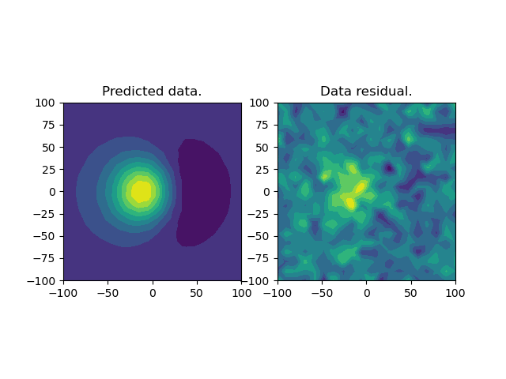

Note
Click here to download the full example code
Magnetic inversion on a TreeMesh¶
In this example, we demonstrate the use of a Magnetic Vector Inverison on 3D TreeMesh for the inversion of magnetics affected by remanence. The mesh is auto-generated based on the position of the observation locations and topography.
We invert the data twice, first for a smooth starting model using the Cartesian coordinate system, and second for a compact model using the Spherical formulation.
The inverse problem uses the :class:’SimPEG.regularization.Sparse’ that
from discretize import TreeMesh
from SimPEG import (
data,
data_misfit,
directives,
maps,
inverse_problem,
optimization,
inversion,
regularization,
)
from SimPEG import utils
from SimPEG.utils import mkvc
from discretize.utils import mesh_builder_xyz, refine_tree_xyz
from SimPEG.potential_fields import magnetics
import scipy as sp
import numpy as np
import matplotlib.pyplot as plt
# sphinx_gallery_thumbnail_number = 3
Setup¶
Define the survey and model parameters
First we need to define the direction of the inducing field As a simple case, we pick a vertical inducing field of magnitude 50,000 nT.
sp.random.seed(1)
# We will assume a vertical inducing field
H0 = (50000.0, 90.0, 0.0)
# The magnetization is set along a different direction (induced + remanence)
M = np.array([45.0, 90.0])
# Create grid of points for topography
# Lets create a simple Gaussian topo and set the active cells
[xx, yy] = np.meshgrid(np.linspace(-200, 200, 50), np.linspace(-200, 200, 50))
b = 100
A = 50
zz = A * np.exp(-0.5 * ((xx / b) ** 2.0 + (yy / b) ** 2.0))
topo = np.c_[utils.mkvc(xx), utils.mkvc(yy), utils.mkvc(zz)]
# Create an array of observation points
xr = np.linspace(-100.0, 100.0, 20)
yr = np.linspace(-100.0, 100.0, 20)
X, Y = np.meshgrid(xr, yr)
Z = A * np.exp(-0.5 * ((X / b) ** 2.0 + (Y / b) ** 2.0)) + 5
# Create a MAGsurvey
xyzLoc = np.c_[mkvc(X.T), mkvc(Y.T), mkvc(Z.T)]
rxLoc = magnetics.receivers.Point(xyzLoc)
srcField = magnetics.sources.SourceField(receiver_list=[rxLoc], parameters=H0)
survey = magnetics.survey.Survey(srcField)
# Here how the topography looks with a quick interpolation, just a Gaussian...
tri = sp.spatial.Delaunay(topo)
fig = plt.figure()
ax = fig.add_subplot(1, 1, 1, projection="3d")
ax.plot_trisurf(
topo[:, 0], topo[:, 1], topo[:, 2], triangles=tri.simplices, cmap=plt.cm.Spectral
)
ax.scatter3D(xyzLoc[:, 0], xyzLoc[:, 1], xyzLoc[:, 2], c="k")
plt.show()
Inversion Mesh¶
Here, we create a TreeMesh with base cell size of 5 m. We created a small utility function to center the mesh around points and to figure out the outermost dimension for adequate padding distance. The second stage allows us to refine the mesh around points or surfaces (point assumed to follow some horizontal trend) The refinement process is repeated twice to allow for a finer level around the survey locations.
# Create a mesh
h = [5, 5, 5]
padDist = np.ones((3, 2)) * 100
mesh = mesh_builder_xyz(
xyzLoc, h, padding_distance=padDist, depth_core=100, mesh_type="tree"
)
mesh = refine_tree_xyz(
mesh, topo, method="surface", octree_levels=[4, 4], finalize=True
)
# Define an active cells from topo
actv = utils.surface2ind_topo(mesh, topo)
nC = int(actv.sum())
A simple function to plot vectors in TreeMesh
Should eventually end up on discretize
def plotVectorSectionsOctree(
mesh,
m,
normal="X",
ind=0,
vmin=None,
vmax=None,
scale=1.0,
vec="k",
axs=None,
actvMap=None,
fill=True,
):
"""
Plot section through a 3D tensor model
"""
# plot recovered model
normalInd = {"X": 0, "Y": 1, "Z": 2}[normal]
antiNormalInd = {"X": [1, 2], "Y": [0, 2], "Z": [0, 1]}[normal]
h2d = (mesh.h[antiNormalInd[0]], mesh.h[antiNormalInd[1]])
x2d = (mesh.x0[antiNormalInd[0]], mesh.x0[antiNormalInd[1]])
#: Size of the sliced dimension
szSliceDim = len(mesh.h[normalInd])
if ind is None:
ind = int(szSliceDim // 2)
cc_tensor = [None, None, None]
for i in range(3):
cc_tensor[i] = np.cumsum(np.r_[mesh.x0[i], mesh.h[i]])
cc_tensor[i] = (cc_tensor[i][1:] + cc_tensor[i][:-1]) * 0.5
slice_loc = cc_tensor[normalInd][ind]
# Create a temporary TreeMesh with the slice through
temp_mesh = TreeMesh(h2d, x2d)
level_diff = mesh.max_level - temp_mesh.max_level
XS = [None, None, None]
XS[antiNormalInd[0]], XS[antiNormalInd[1]] = np.meshgrid(
cc_tensor[antiNormalInd[0]], cc_tensor[antiNormalInd[1]]
)
XS[normalInd] = np.ones_like(XS[antiNormalInd[0]]) * slice_loc
loc_grid = np.c_[XS[0].reshape(-1), XS[1].reshape(-1), XS[2].reshape(-1)]
inds = np.unique(mesh._get_containing_cell_indexes(loc_grid))
grid2d = mesh.gridCC[inds][:, antiNormalInd]
levels = mesh._cell_levels_by_indexes(inds) - level_diff
temp_mesh.insert_cells(grid2d, levels)
tm_gridboost = np.empty((temp_mesh.nC, 3))
tm_gridboost[:, antiNormalInd] = temp_mesh.gridCC
tm_gridboost[:, normalInd] = slice_loc
# Interpolate values to mesh.gridCC if not 'CC'
mx = actvMap * m[:, 0]
my = actvMap * m[:, 1]
mz = actvMap * m[:, 2]
m = np.c_[mx, my, mz]
# Interpolate values from mesh.gridCC to grid2d
ind_3d_to_2d = mesh._get_containing_cell_indexes(tm_gridboost)
v2d = m[ind_3d_to_2d, :]
amp = np.sum(v2d ** 2.0, axis=1) ** 0.5
if axs is None:
axs = plt.subplot(111)
if fill:
temp_mesh.plotImage(amp, ax=axs, clim=[vmin, vmax], grid=True)
axs.quiver(
temp_mesh.gridCC[:, 0],
temp_mesh.gridCC[:, 1],
v2d[:, antiNormalInd[0]],
v2d[:, antiNormalInd[1]],
pivot="mid",
scale_units="inches",
scale=scale,
linewidths=(1,),
edgecolors=(vec),
headaxislength=0.1,
headwidth=10,
headlength=30,
)
Forward modeling data¶
We can now create a magnetization model and generate data Lets start with a block below topography
model = np.zeros((mesh.nC, 3))
# Convert the inclination declination to vector in Cartesian
M_xyz = utils.mat_utils.dip_azimuth2cartesian(M[0], M[1])
# Get the indicies of the magnetized block
ind = utils.model_builder.getIndicesBlock(
np.r_[-20, -20, -10], np.r_[20, 20, 25], mesh.gridCC,
)[0]
# Assign magnetization values
model[ind, :] = np.kron(np.ones((ind.shape[0], 1)), M_xyz * 0.05)
# Remove air cells
model = model[actv, :]
# Create active map to go from reduce set to full
actvMap = maps.InjectActiveCells(mesh, actv, np.nan)
# Creat reduced identity map
idenMap = maps.IdentityMap(nP=nC * 3)
# Create the simulation
simulation = magnetics.simulation.Simulation3DIntegral(
survey=survey, mesh=mesh, chiMap=idenMap, actInd=actv, modelType="vector"
)
# Compute some data and add some random noise
d = simulation.dpred(mkvc(model))
std = 5 # nT
synthetic_data = d + np.random.randn(len(d)) * std
wd = np.ones(len(d)) * std
# Assign data and uncertainties to the survey
data_object = data.Data(survey, dobs=synthetic_data, standard_deviation=wd)
# Create an projection matrix for plotting later
actv_plot = maps.InjectActiveCells(mesh, actv, np.nan)
# Plot the model and data
plt.figure()
ax = plt.subplot(2, 1, 1)
im = utils.plot_utils.plot2Ddata(xyzLoc, synthetic_data, ax=ax)
plt.colorbar(im[0])
ax.set_title("Predicted data.")
plt.gca().set_aspect("equal", adjustable="box")
# Plot the vector model
ax = plt.subplot(2, 1, 2)
plotVectorSectionsOctree(
mesh,
model,
axs=ax,
normal="Y",
ind=66,
actvMap=actv_plot,
scale=0.5,
vmin=0.0,
vmax=0.025,
)
ax.set_xlim([-200, 200])
ax.set_ylim([-100, 75])
ax.set_xlabel("x")
ax.set_ylabel("y")
plt.gca().set_aspect("equal", adjustable="box")
plt.show()
Inversion¶
We can now attempt the inverse calculations. We put great care into designing an inversion methology that would yield a geologically reasonable solution for the non-induced problem. The inversion is done in two stages. First we compute a smooth solution using a Cartesian coordinate system, then a sparse inversion in the Spherical domain.
# Create sensitivity weights from our linear forward operator
rxLoc = survey.source_field.receiver_list[0].locations
# This Mapping connects the regularizations for the three-component
# vector model
wires = maps.Wires(("p", nC), ("s", nC), ("t", nC))
m0 = np.ones(3 * nC) * 1e-4 # Starting model
# Create three regularizations for the different components
# of magnetization
reg_p = regularization.Sparse(mesh, indActive=actv, mapping=wires.p)
reg_p.mref = np.zeros(3 * nC)
reg_s = regularization.Sparse(mesh, indActive=actv, mapping=wires.s)
reg_s.mref = np.zeros(3 * nC)
reg_t = regularization.Sparse(mesh, indActive=actv, mapping=wires.t)
reg_t.mref = np.zeros(3 * nC)
reg = reg_p + reg_s + reg_t
reg.mref = np.zeros(3 * nC)
# Data misfit function
dmis = data_misfit.L2DataMisfit(simulation=simulation, data=data_object)
dmis.W = 1.0 / data_object.standard_deviation
# Add directives to the inversion
opt = optimization.ProjectedGNCG(
maxIter=10, lower=-10, upper=10.0, maxIterLS=20, maxIterCG=20, tolCG=1e-4
)
invProb = inverse_problem.BaseInvProblem(dmis, reg, opt)
# A list of directive to control the inverson
betaest = directives.BetaEstimate_ByEig(beta0_ratio=1e1)
# Add sensitivity weights
sensitivity_weights = directives.UpdateSensitivityWeights()
# Here is where the norms are applied
# Use a threshold parameter empirically based on the distribution of
# model parameters
IRLS = directives.Update_IRLS(f_min_change=1e-3, max_irls_iterations=2, beta_tol=5e-1)
# Pre-conditioner
update_Jacobi = directives.UpdatePreconditioner()
inv = inversion.BaseInversion(
invProb, directiveList=[sensitivity_weights, IRLS, update_Jacobi, betaest]
)
# Run the inversion
mrec_MVIC = inv.run(m0)
Out:
SimPEG.InvProblem is setting bfgsH0 to the inverse of the eval2Deriv.
***Done using same Solver and solverOpts as the problem***
model has any nan: 0
=============================== Projected GNCG ===============================
# beta phi_d phi_m f |proj(x-g)-x| LS Comment
-----------------------------------------------------------------------------
x0 has any nan: 0
0 1.37e+08 1.24e+04 8.06e-06 1.35e+04 2.78e+03 0
1 6.87e+07 1.05e+04 1.24e-05 1.13e+04 2.74e+03 0
2 3.43e+07 5.09e+03 3.82e-05 6.40e+03 2.12e+03 0 Skip BFGS
3 1.72e+07 2.98e+03 8.21e-05 4.39e+03 2.00e+03 0 Skip BFGS
4 8.58e+06 1.45e+03 1.45e-04 2.69e+03 1.85e+03 0 Skip BFGS
5 4.29e+06 6.01e+02 2.13e-04 1.51e+03 1.68e+03 0 Skip BFGS
6 2.15e+06 2.28e+02 2.72e-04 8.13e+02 1.50e+03 0 Skip BFGS
Reached starting chifact with l2-norm regularization: Start IRLS steps...
eps_p: 0.005189642406927952 eps_q: 0.005189642406927952
eps_p: 0.00350611388254448 eps_q: 0.00350611388254448
eps_p: 0.006238958662948744 eps_q: 0.006238958662948744
7 1.07e+06 8.40e+01 3.18e-04 4.25e+02 1.31e+03 0 Skip BFGS
8 4.63e+06 3.01e+01 3.53e-04 1.66e+03 1.70e+03 0 Skip BFGS
Reach maximum number of IRLS cycles: 2
------------------------- STOP! -------------------------
1 : |fc-fOld| = 0.0000e+00 <= tolF*(1+|f0|) = 1.3531e+03
1 : |xc-x_last| = 1.7292e-02 <= tolX*(1+|x0|) = 1.0336e-01
0 : |proj(x-g)-x| = 1.7007e+03 <= tolG = 1.0000e-01
0 : |proj(x-g)-x| = 1.7007e+03 <= 1e3*eps = 1.0000e-02
0 : maxIter = 10 <= iter = 9
------------------------- DONE! -------------------------
Sparse Vector Inversion¶
Re-run the MVI in the spherical domain so we can impose sparsity in the vectors.
spherical_map = maps.SphericalSystem()
m_start = utils.mat_utils.cartesian2spherical(mrec_MVIC.reshape((nC, 3), order="F"))
beta = invProb.beta
dmis.simulation.chiMap = spherical_map
dmis.simulation.model = m_start
# Create a block diagonal regularization
wires = maps.Wires(("amp", nC), ("theta", nC), ("phi", nC))
# Create a Combo Regularization
# Regularize the amplitude of the vectors
reg_a = regularization.Sparse(mesh, indActive=actv, mapping=wires.amp)
reg_a.norms = np.c_[0.0, 0.0, 0.0, 0.0] # Sparse on the model and its gradients
reg_a.mref = np.zeros(3 * nC)
# Regularize the vertical angle of the vectors
reg_t = regularization.Sparse(mesh, indActive=actv, mapping=wires.theta)
reg_t.alpha_s = 0.0 # No reference angle
reg_t.space = "spherical"
reg_t.norms = np.c_[0.0, 0.0, 0.0, 0.0] # Only norm on gradients used
# Regularize the horizontal angle of the vectors
reg_p = regularization.Sparse(mesh, indActive=actv, mapping=wires.phi)
reg_p.alpha_s = 0.0 # No reference angle
reg_p.space = "spherical"
reg_p.norms = np.c_[0.0, 0.0, 0.0, 0.0] # Only norm on gradients used
reg = reg_a + reg_t + reg_p
reg.mref = np.zeros(3 * nC)
lower_bound = np.kron(np.asarray([0, -np.inf, -np.inf]), np.ones(nC))
upper_bound = np.kron(np.asarray([10, np.inf, np.inf]), np.ones(nC))
# Add directives to the inversion
opt = optimization.ProjectedGNCG(
maxIter=20,
lower=lower_bound,
upper=upper_bound,
maxIterLS=20,
maxIterCG=30,
tolCG=1e-3,
stepOffBoundsFact=1e-3,
)
opt.approxHinv = None
invProb = inverse_problem.BaseInvProblem(dmis, reg, opt, beta=beta)
# Here is where the norms are applied
irls = directives.Update_IRLS(
f_min_change=1e-4,
max_irls_iterations=20,
minGNiter=1,
beta_tol=0.5,
coolingRate=1,
coolEps_q=True,
sphericalDomain=True,
)
# Special directive specific to the mag amplitude problem. The sensitivity
# weights are updated between each iteration.
spherical_projection = directives.ProjectSphericalBounds()
sensitivity_weights = directives.UpdateSensitivityWeights()
update_Jacobi = directives.UpdatePreconditioner()
inv = inversion.BaseInversion(
invProb,
directiveList=[spherical_projection, irls, sensitivity_weights, update_Jacobi],
)
mrec_MVI_S = inv.run(m_start)
Out:
SimPEG.InvProblem will set Regularization.mref to m0.
SimPEG.InvProblem will set Regularization.mref to m0.
SimPEG.InvProblem is setting bfgsH0 to the inverse of the eval2Deriv.
***Done using same Solver and solverOpts as the problem***
model has any nan: 0
=============================== Projected GNCG ===============================
# beta phi_d phi_m f |proj(x-g)-x| LS Comment
-----------------------------------------------------------------------------
x0 has any nan: 0
0 4.63e+06 2.55e+02 3.95e-04 2.08e+03 4.73e+02 0
1 2.32e+06 3.52e+02 3.32e-04 1.12e+03 9.92e+02 2
2 1.16e+06 3.55e+02 3.36e-04 7.44e+02 1.01e+03 4
3 5.79e+05 3.43e+02 4.15e-04 5.83e+02 9.44e+02 3
4 2.89e+05 3.30e+02 3.90e-04 4.43e+02 8.38e+02 2
5 1.45e+05 2.96e+02 4.00e-04 3.54e+02 8.47e+02 3
Reached starting chifact with l2-norm regularization: Start IRLS steps...
eps_p: 0.00704143875895914 eps_q: 0.00704143875895914
eps_p: 2.2839969088950003 eps_q: 2.2839969088950003
eps_p: 6.275002795006518 eps_q: 6.275002795006518
6 7.24e+04 4.11e+01 9.77e-04 1.12e+02 6.68e+02 0
7 2.64e+05 3.77e+01 1.21e-03 3.58e+02 5.91e+02 2
8 6.30e+05 7.23e+01 1.69e-03 1.14e+03 6.85e+02 0
9 6.30e+05 1.18e+02 1.74e-03 1.22e+03 7.42e+02 2
10 6.30e+05 2.37e+02 1.87e-03 1.42e+03 8.67e+02 1
11 6.30e+05 3.00e+02 1.81e-03 1.44e+03 8.63e+02 3
12 4.38e+05 3.12e+02 1.90e-03 1.15e+03 9.31e+02 4
13 2.97e+05 3.30e+02 2.01e-03 9.27e+02 9.97e+02 2
14 2.00e+05 3.35e+02 2.05e-03 7.44e+02 1.05e+03 4
15 2.00e+05 2.41e+02 2.40e-03 7.21e+02 9.67e+02 1 Skip BFGS
16 2.00e+05 2.44e+02 2.29e-03 7.01e+02 9.04e+02 2
17 2.00e+05 2.39e+02 1.86e-03 6.11e+02 9.55e+02 0
18 1.29e+05 3.69e+02 7.05e-04 4.60e+02 9.95e+02 0
19 1.29e+05 2.49e+02 5.53e-04 3.20e+02 9.28e+02 0
20 1.29e+05 1.95e+02 3.28e-04 2.38e+02 7.42e+02 0
------------------------- STOP! -------------------------
1 : |fc-fOld| = 8.2267e+01 <= tolF*(1+|f0|) = 2.0858e+02
0 : |xc-x_last| = 4.4819e+02 <= tolX*(1+|x0|) = 3.6975e+01
0 : |proj(x-g)-x| = 7.4198e+02 <= tolG = 1.0000e-01
0 : |proj(x-g)-x| = 7.4198e+02 <= 1e3*eps = 1.0000e-02
1 : maxIter = 20 <= iter = 20
------------------------- DONE! -------------------------
Final Plot¶
Let’s compare the smooth and compact model
plt.figure(figsize=(8, 8))
ax = plt.subplot(2, 1, 1)
plotVectorSectionsOctree(
mesh,
mrec_MVIC.reshape((nC, 3), order="F"),
axs=ax,
normal="Y",
ind=65,
actvMap=actv_plot,
scale=0.05,
vmin=0.0,
vmax=0.005,
)
ax.set_xlim([-200, 200])
ax.set_ylim([-100, 75])
ax.set_title("Smooth model (Cartesian)")
ax.set_xlabel("x")
ax.set_ylabel("y")
plt.gca().set_aspect("equal", adjustable="box")
ax = plt.subplot(2, 1, 2)
vec_xyz = utils.mat_utils.spherical2cartesian(
invProb.model.reshape((nC, 3), order="F")
).reshape((nC, 3), order="F")
plotVectorSectionsOctree(
mesh,
vec_xyz,
axs=ax,
normal="Y",
ind=65,
actvMap=actv_plot,
scale=0.4,
vmin=0.0,
vmax=0.025,
)
ax.set_xlim([-200, 200])
ax.set_ylim([-100, 75])
ax.set_title("Sparse model (Spherical)")
ax.set_xlabel("x")
ax.set_ylabel("y")
plt.gca().set_aspect("equal", adjustable="box")
plt.show()
# Plot the final predicted data and the residual
plt.figure()
ax = plt.subplot(1, 2, 1)
utils.plot_utils.plot2Ddata(xyzLoc, invProb.dpred, ax=ax)
ax.set_title("Predicted data.")
plt.gca().set_aspect("equal", adjustable="box")
ax = plt.subplot(1, 2, 2)
utils.plot_utils.plot2Ddata(xyzLoc, synthetic_data - invProb.dpred, ax=ax)
ax.set_title("Data residual.")
plt.gca().set_aspect("equal", adjustable="box")
- 
Total running time of the script: ( 7 minutes 3.206 seconds)
Estimated memory usage: 786 MB